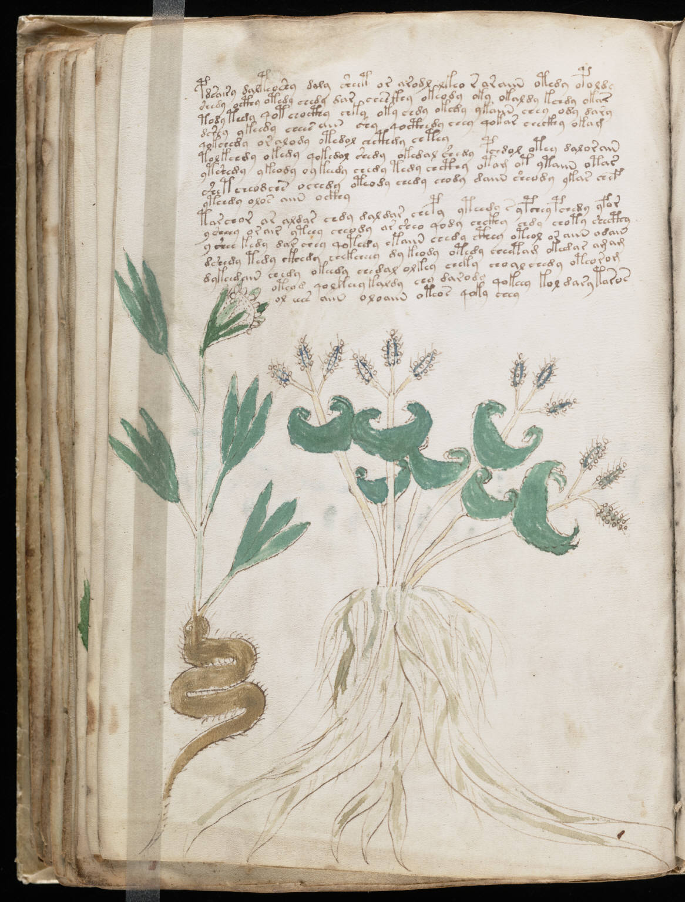

f43v
1pdsairy dalteoshy da ly sheet or arodl lkeo raraiin otedyo poldy2shedy octhy otedy chedy dar chesckhy okeody oky okaldy kchdy okar3tody teedy qot chocthy chky oky chdy okedy ykaiin chey ody dary4dshey ykeedy chees aiin chy qocthedy chey qokar checkhy okam5qokchedy or alody otedol chcthdy chtey6tolkchdy okedy qokedol shedy okedal shedy pchdol otey dalorain7ytshedy ykeody oykeedy chedy tedy chcthy otam ot ytaiin otas8shetcheodchs ochedy oteody chedy chody daiin sheody ykar chef9yteedy olos aiin ockhy10tar chor ar aldar chdy daldar chepy yteedy ypchey pchedy yfor11y sheey or air yteey cheody ar sheo qody chckhy chdy choty shecthy12y shee kedy dar chey qotedy ekaiin chedy cthey oteol or aiin odain13dshedy tedy ckhedy chekcheey dy keody otedy cheetam okedar amam14dykeedain chedy okeedy chedal olkey cheky choal chedy oteorom15oteod qolkeey kaldy chy darod* qokeey kol dary taros16ol eees aiin oloaiin oteos qoky chey
